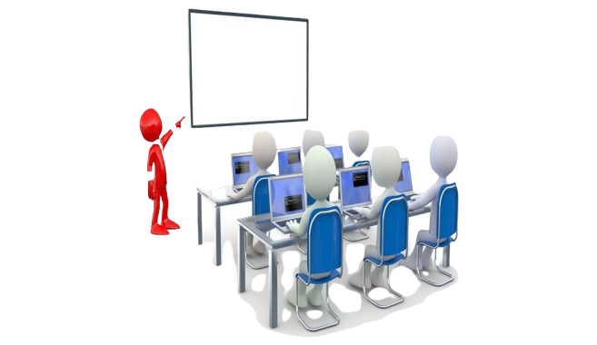

|  |
Apprentissage des languages En permettant à un membre du groupe de présenter un langage informatique lors d'une présentation structurée, les autres membres ont l'opportunité de bénéficier de ses connaissances et de son expertise. Cela favorise un environnement d'apprentissage où les membres peuvent se soutenir mutuellement et apprendre les uns des autres. |
Développement de projets communs Travailler sur des projets communs, tels que la création d'applications ou de sites Web, offre aux membres une expérience pratique significative. Cela leur permet d'appliquer les concepts théoriques qu'ils ont appris en cours d’NSI à des projets réels, ce qui renforce leur compréhension et leur confiance en leurs compétences. |
|
CodageDes sessions de codage et de résolution de problèmes sont organisées régulièrement, où les membres peuvent mettre en pratique leurs compétences en programmation et relever des défis. Ces sessions permettent aux membres de renforcer leurs compétences et de développer leur capacité à résoudre des problèmes de manière efficace. |